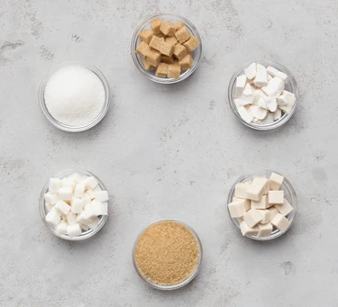

Sugar

What is sugar?
Honey and syrups made from concentrated fruit juice were the earliest known sweeteners. Today, refined sugar is the most popular type of sweetener, and it is made from sugar cane or sugar beet.
There are several different types of sugar that add a range of textures, tints and flavours to cooking. These broadly fall into two categories, brown and white sugars.
How to cook with sugar
Sugar is an incredibly versatile ingredient, and can be used for stirring through hot drinks, sprinkling over cereals, adding to glazes before roasting meats, drizzling over cakes or melting into a golden caramel.Try adding a pinch of sugar to tomato sauces to bring out the natural sweetness of the tomatoes. Melt in a dry frying pan into an amber caramel before drizzling or cooling, or add a pinch to salad dressings to balance acidity. Sugar is a staple ingredient in sweet and savoury cooking.
There are a variety of types of sugar such as:
Brown sugars
Golden caster sugar: loosely packed and sandy in texture with a warm, golden colour, golden caster sugar is a fine sugar that is ideal for use in creamed sponge cakes. It's the same as normal caster sugar, but it's unrefined, so has more caramel flavours.Demerara/raw sugar: darker than golden caster sugar and with a more intense flavour, demerara works well in coffee and sprinkled over sharp fruits such as grapefruit. With its coarse texture, it creates a lovely, crunchy topping for cakes, cupcakes and crumbles.
Light brown soft sugar: a popular sugar for making fruit cakes and puddings where a rich, full flavour is required. It's damp and denser than caster or demerara.
Dark brown soft sugar: looks as its name suggests, and has a richer flavour. It works well in cakes, gingerbread, pickles and chutneys. It has more bitter notes than other sugars, and is reminiscent of treacle in flavour.
Light and dark muscovado sugar: relatively unrefined, with much or all of the molasses still remaining. It has a dark, treacle-y flavour which is ideal in sticky gingerbread or rich fruit cakes.
White sugars
Granulated sugar: this sugar makes a good addition to a cup of tea or sprinkled over fresh fruit such as strawberries. It's a good all-purpose sugar for cooking.Caster sugar: finer than granulated, caster sugar dissolves more easily, making it ideal for cakes, custards and mousses. It's also perfect for snowy white meringues.
Icing sugar: also known as confectioner's sugar, this is white sugar ground to a fine powder with the addition of an anti-caking agent, such as calcium phosphate or cornflour. It dissolves on contact with liquid and is therefore used to sweeten foods that are not going to be heated and require a smooth texture. It is also used for dusting cakes and desserts, and as the name suggests, for various types of icing including buttercream and glacé icing.